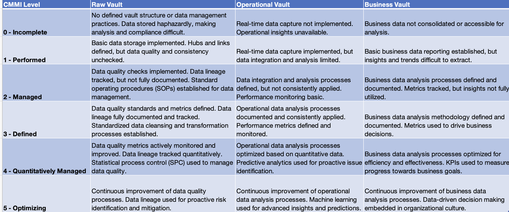

Introduction: In the ever-evolving landscape of healthcare data management, choosing the right data modeling approach is crucial for ensuring flexibility, scalability, and adaptability.
In this article, we'll explore two popular methodologies - Conventional Dimensional Modeling and Data Vault 2.0 - and delve into the specific needs of patient healthcare, emphasizing the significance of Raw, Operational and Business Vaults.
Additionally, we'll consider the implications of these approaches in the context of cloud architecture, encompassing hybrid, private, and public cloud environments.
Conventional Dimensional Modeling:
Benefits:
Simplified Queries: Conventional dimensional modeling provides a straightforward structure with well-defined relationships, making it suitable for traditional business intelligence queries. This simplicity enhances performance in scenarios where quick and uncomplicated access to data is essential.
Ease of Implementation: Setting up a conventional dimensional model is relatively straightforward, making it an attractive option for organizations with straightforward reporting requirements. It is well-suited for scenarios where the data structure is relatively stable.
Challenges:
Complexity in Many-to-Many Relationships: Addressing many-to-many relationships often involves the creation of bridge tables, resulting in more complex queries. This can lead to challenges in maintaining and optimizing the performance of the database.
Less Adaptive to Changes: Conventional models may face challenges in handling evolving data sources and changing requirements. Adjusting the schema to accommodate new data elements may require significant effort.
Data Vault 2.0:
DV2 advocates for a layered approach, separating raw data storage from transformed, business-ready data. It prioritizes flexibility and scalability through hubs, links, and satellites.
Benefits:
Flexibility: Adapts to changing data sources, requirements, and analytical needs.
Scalability: Handles large datasets efficiently and integrates diverse data sources.
Auditing and Historical Analysis: Raw vault preserves all data for future audits and historical insights.
Cloud-friendly: Aligns well with cloud architectures' distributed nature and scalability.
Benefits of Raw, Business, and Operational Vaults:
Raw Vault:
Auditability: Serves as an indisputable source of truth for regulatory compliance and investigations, preserving all original data with complete lineage.
Data Lineage: Ensures comprehensive understanding of data transformations and their impact on data quality, fostering trust and transparency.
Historical Analysis: Enables exploration of past trends and patterns across the entire data landscape, providing valuable insights for future improvements.
Business Vault:
Performance: Optimized for specific queries and analytics relevant to business domains, facilitating faster access to actionable insights.
Subject-oriented: Tailored to specific business domains and their unique information needs, simplifying exploration and understanding for non-technical users.
Usability: Provides a readily consumable and well-organized layer for analysts and data consumers, reducing time spent on data preparation and manipulation.
Operational Vault:
Real-time Insights: Enables continuous monitoring and analysis of operational data, allowing for proactive decision-making and timely issue resolution.
Granular Visibility: Provides detailed information on individual transactions and processes, supporting root-cause analysis and performance optimization.
Agility and Adaptability: Quickly adapts to changing business requirements and integrates new data sources with minimal disruption to existing operations.
Key Differentiators:
Raw Vault: Focuses on comprehensive data capture and preservation for historical analysis and auditability.
Business Vault: Optimizes data for specific business use cases and knowledge workers.
Operational Vault: Provides real-time visibility and insights into ongoing operational processes.
By leveraging all three vaults, organizations can achieve a comprehensive data management strategy that supports historical analysis, informed decision-making, and agile business operations.
Cloud Architectures:
Both dimensional modeling and DV2 can be implemented in different cloud environments:
Public Cloud: Offers scalability, cost-effectiveness, and flexibility but requires robust security measures.
Private Cloud: Provides better control and security but might limit scalability and agility.
Hybrid Cloud: Combines strengths of both, offering flexibility, scalability, and control.
Which approach is right for you?
The choice depends on your specific needs:
Dimensional modeling: Opt for this if you have well-defined analytical requirements and a relatively static data environment.
DV2: Choose this if you prioritize flexibility, scalability, historical analysis, and cloud-based architectures.
SEI - The Capability Maturity Model Integration (CMMI)
SEI CMM Maturity ModelEntities and Relationships for Patient Data Model:
Scenario 1: Conventional Dimensional Modeling
Entities:
DimPatient: Stores patient demographics and identifiers (PatientMedicalIdentifier, PatientFullName).
DimDate: Holds dates and time-related attributes (Date, DayOfWeek, Month, etc.).
DimHealthcareFacility: Captures information about healthcare facilities (FacilityID, Name, Address, etc.).
DimDevice: Lists medical devices (DeviceID, Type, Manufacturer).
DimMedication: Contains details about medications (MedicationID, Name, Dosage form).
DimHealthcareProfessional: Stores information about healthcare providers (HealthcareProfessionalID, Name, Specialty).
FactPatientEncounter: Records details of patient encounters (EncounterID, PatientID, Date, FacilityID, Reason).
FactDiagnosis: Captures patient diagnoses (EncounterID, DiagnosisCode, Date).
FactProcedure: Documents performed medical procedures (EncounterID, ProcedureCode, Date).
FactMedicationOrder: Tracks medication orders (EncounterID, MedicationID, Dosage, Schedule).
FactMedicationAdministration: Records medication administrations (EncounterID, MedicationID, Date, Time, AdministeredBy).
FactObservation: Holds clinical observations during encounters (EncounterID, ObservationType, Value, Date, RecordedBy).
Relationships:
One-to-Many:
DimPatient:
Has many FactPatientEncounters
Has many FactDiagnoses
Has many FactProcedures
Has many FactMedicationOrders
Has many FactMedicationAdministrations
Has many FactObservations
DimHealthcareFacility:
Has many FactPatientEncounters
DimDevice:
Has many FactPatientEncounters (through a bridge table)
DimMedication:
Has many FactMedicationOrders
Has many FactMedicationAdministrations
DimHealthcareProfessional:
Has many FactPatientEncounters (through a bridge table)
Many-to-Many:
DimPatient:
Can have many DimDevices (through a bridge table)
Can be treated by many DimHealthcareProfessionals (through a bridge table)
DimEncounter:
Can have many DimDevices (through a bridge table)
Can involve many DimHealthcareProfessionals (through a bridge table)
Challenges:
Complex schema with numerous tables and joins.
Requires careful design to optimize query performance.
Can be less flexible for evolving data needs.
Benefits:
Well-suited for analytical queries and reporting.
Clear separation of fact and dimension tables.
SQL Examples for Conventional Dimensional Modeling with Patient Data
1. Find all encounters for a specific patient:
2. Find medications used in a specific encounter:
3. Find allergies for a specific patient with their diagnosis codes:
4. Find observations during a specific encounter with associated providers:
5. Find contact information for a specific patient with their address:
Scenario 2: Data Vault 2.0
Entities:
Hubs:
Patient (PatientSurrogateKey, PatientID, PatientName, DOB)
Encounter (EncounterSurrogateKey, EncounterID, Date, Location)
Device (DeviceSurrogateKey, DeviceID, DeviceType)
Medication (MedicationSurrogateKey, MedicationID, Name)
Provider (ProviderSurrogateKey, ProviderID, Name)
Links:
Patient_Encounter (PatientSurrogateKey, EncounterSurrogateKey)
Encounter_Device (EncounterSurrogateKey, DeviceSurrogateKey)
Encounter_Medication (EncounterSurrogateKey, MedicationSurrogateKey)
Encounter_Provider (EncounterSurrogateKey, ProviderSurrogateKey, Role)
Satellites:
Patient_Address (PatientSurrogateKey, AddressLine1, City, State)
Patient_Allergy (PatientSurrogateKey, AllergyType, Reaction)
Patient_Diagnosis (PatientSurrogateKey, DiagnosisCode, Date)
Patient_Contact (PatientSurrogateKey, PhoneNumber, Email)
Encounter_Observation (EncounterSurrogateKey, ObservationType, Value, Date)
Medication_Dosage (MedicationSurrogateKey, Dosage, Schedule)
Challenges:
Requires more upfront design and planning.
Can be complex to implement and manage.
Additional overhead for data loading and transformations.
Benefits:
Highly flexible and scalable for large datasets.
Supports historical analysis and data lineage tracking.
Optimized for parallel processing and performance.
SQL Examples for Data Vault 2.0 with Patient Data
1. Find all encounters for a specific patient:
2. Find medications used in a specific encounter:
3. Find allergies for a specific patient with their diagnosis codes:
4. Find observations during a specific encounter with associated providers:
5. Find contact information for a specific patient with their address:
Schema Breakdown for Raw, Operational, and Business Vaults in Data Vault 2.0
Here's a breakdown of what should be in each vault based on your provided schema:
Raw Vault:
Purpose: Store unprocessed data exactly as it arrives from source systems.
Schema:
Tables: One table for each entity (e.g., PatientRaw, EncounterRaw, etc.).
Columns: Include all original columns from source systems, even if unused initially.
Keys: Use a unique identifier for each record (e.g., RawDataID).
Relationships: No explicit relationships are defined in the raw vault.
Operational Vault:
Purpose: Support operational reporting and analysis.
Schema: Tables:
Fact tables:
FactPatientEncounter (PatientSurrogateKey, EncounterSurrogateKey, Date, Location, ProviderRole)
FactMedicationAdministration (EncounterSurrogateKey, MedicationID, Dosage, Schedule, Date, Time, AdministeredBy)
FactObservation (EncounterSurrogateKey, ObservationType, Value, Date)
Dimension tables:
DimPatient (PatientSurrogateKey, PatientID, PatientName, DOB, AddressLine1, City, State, PhoneNumber, Email) - Combines Patient and Patient_Address, Patient_Contact data.
DimEncounter (EncounterSurrogateKey, EncounterID, Date, Location) DimDevice (DeviceSurrogateKey, DeviceID, DeviceType)
DimMedication (MedicationSurrogateKey, MedicationID, Name, Dosage form)
DimProvider (ProviderSurrogateKey, ProviderID, Name) Keys: Use surrogate keys established in the raw vault for consistency.
Relationships: Implement links based on operational data relationships (e.g., Patient_Encounter_Link, Encounter_Medication_Link).
Business Vault:
Purpose: Support broader business analytics and decision-making.
Schema: Tables:
Fact tables:
FactPatientReadmission (PatientSurrogateKey, ReadmissionDate, PreviousEncounterID)
FactMedicationEffectiveness (MedicationID, EncounterSurrogateKey, DiagnosisCode, Outcome)
FactPatientLengthOfStay (EncounterSurrogateKey, AdmissionDate, DischargeDate)
FactPatientCost (EncounterSurrogateKey, CostCategory, Amount)
Dimension tables:
DimDiagnosis (DiagnosisCode, Description) - Extract from Patient_Diagnosis data.
DimProcedure (ProcedureCode, Description) - May need additional data source.
DimDepartment (DepartmentID, Name) - May need additional data source. Keys: Use surrogate keys from the operational vault to maintain consistency.
Relationships: Implement links based on business data relationships (e.g., Patient_Diagnosis_Link, Treatment_Encounter_Link).
Additional Notes:
This is a high-level example, and the specific tables and columns may vary based on your specific needs.
Consider using SCD (Slowly Changing Dimensions) techniques for dimension tables to track changes over time.
Data cleaning and transformation may be necessary before loading data into the operational and business vaults.
Additional Resources:
Data Vault 2.0:
Data Vault 2.0 Fundamentals: https://www.databricks.com/blog/2022/06/24/prescriptive-guidance-for-implementing-a-data-vault-model-on-the-databricks-lakehouse-platform.html
Data Vault Alliance: https://datavaultalliance.com/
Data Vault 2.0 Modeling Examples: https://medium.com/crystalloids/what-is-data-vault-modeling-and-when-should-you-use-it-331c613c29ee
Conventional Dimensional Modeling:
The Data Warehouse Toolkit - Ralph Kimball: https://www.wiley.com/en-us/The+Data+Warehouse+Toolkit:+The+Definitive+Guide+to+Dimensional+Modeling,+3rd+Edition-p-9781118530801
Dimensional Modeling for Data Warehouses - W.H. Inmon: https://www.amazon.com/Building-Data-Warehouse-W-Inmon/dp/0764599445
Kimball Group: https://www.kimballgroup.com/
Inmon Warehouse: https://medium.com/analytics-vidhya/theories-of-kimball-and-inmon-about-data-warehouse-design-c16260fab5e9
Dimensional Modeling: Which Approach is Right for You?" by Inmon Community: https://www.astera.com/type/blog/data-warehouse-concepts/
Microsoft Data Warehouse: https://azure.microsoft.com/en-us/resources/cloud-computing-dictionary/what-is-a-data-warehouse
Amazon Redshift: https://docs.aws.amazon.com/redshift/
Snowflake: https://docs.snowflake.com/
Comparison of Approaches:
Data Vault vs. Star Schema: Key Differences and Use Cases" by Edureka: https://www.matillion.com/blog/data-vault-vs-star-schema-vs-third-normal-form-which-data-model-to-use
Blog: Data Vault 2.0 vs. Dimensional Modeling: https://medium.com/@amarrjoshi/understanding-the-differences-between-inmon-kimball-and-data-vault-data-models-79868aa99525
Cloud Architecture:
Data Warehousing in the Cloud: https://learn.microsoft.com/en-us/azure/architecture/example-scenario/data/data-warehouse
AWS Data Warehousing: https://aws.amazon.com/redshift/
GCP Data Warehouse: https://cloud.google.com/learn/what-is-a-data-warehouse
Healthcare Data Analytics:
Healthcare Data Analytics: A Practical Guide: https://www.wiley.com/en-be/Healthcare+Analytics:+From+Data+to+Knowledge+to+Healthcare+Improvement-p-9781118919392
Big Data Analytics in Healthcare: https://www.ncbi.nlm.nih.gov/pmc/articles/PMC4341817/
The Future of Healthcare Data Analytics: https://www.mckinsey.com/industries/healthcare/our-insights/the-future-of-healthcare